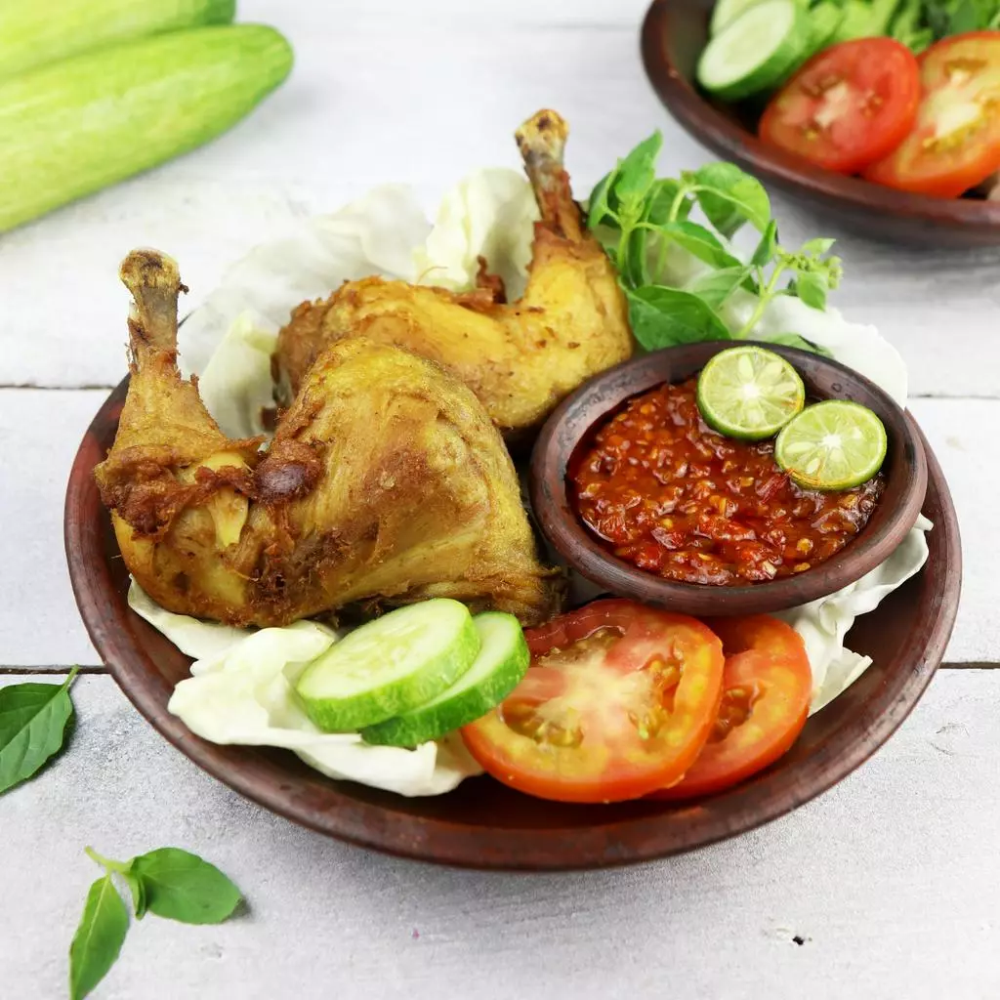

Pecel Ayam
Makanan Gacor
Pecel Ayam Adalah Makanan gacor yang ada di warung tc gacor
Pecel Ayam Adalah Makanan gacor yang ada di warung tc gacor

Soto Ayam terbaik di TC!
Sate Paling Gacor kata anak-anak TC